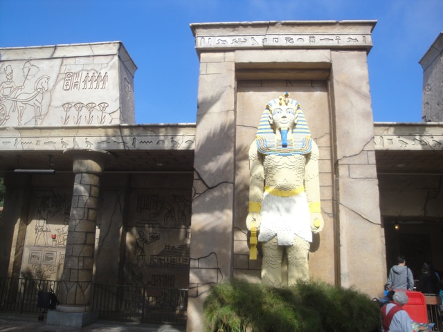
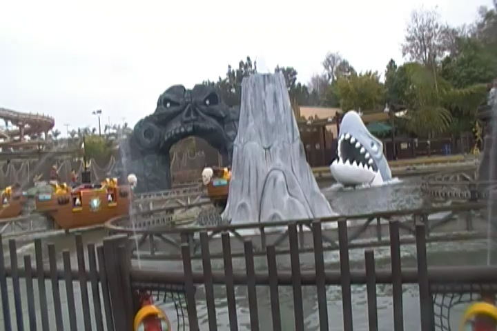
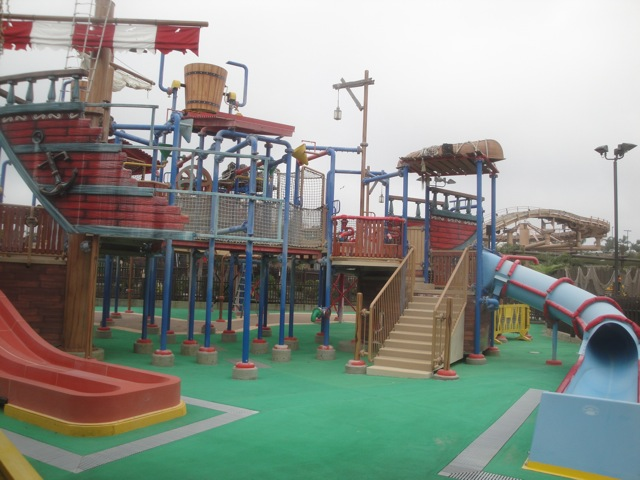
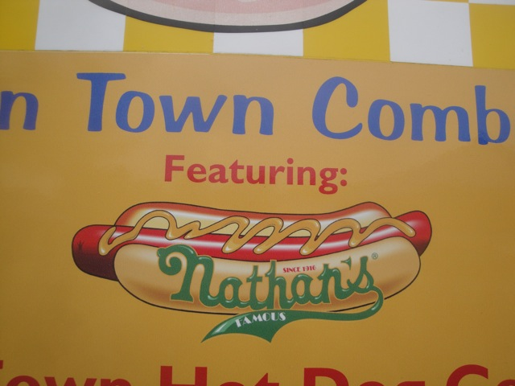
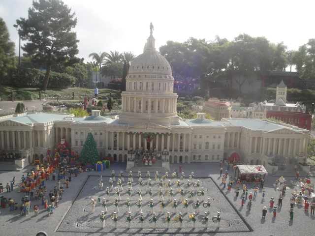

While most of the parks we review here are primarily for locals and nothing special, the Legolands however, are an interesting bunch and Legoland California is definetly one of the interesting Legoland Parks as the first Legoland that I have been to as well as the first Legoland in the United States. OK, that's nothing special, but after visiting Legoland Billund in Denmark, there really is an interseting differences between the Legolands in different countries as Legoland California has all these American icons and Legoland Billund has what I assume are Danish icons (Sorry for being a crappy Dane). Anyways, Legoland California (as with all the Legolands) is generally written off as just something stupid that is only meant for children and that no adults should be there unless they are a parent. Oh f*ck that!!! Legoland is a very fun park with a lot of fun. Trust me, this is NOT a credit whoring park where you just go, get the credits, and leave. There's a bunch of cool stuff, including dark rides, other random rides, and hey. Legos are freaking awesome!!! And they really have a ton of fun and get creative with how they decorate all of the different rides with all of the legos. And please don't tell me that Legos are only for kids and that adults can't like Legos. Assholes who say that adults can only like certain things and that they can't like certain things because it's too juvenile are one of my top pet peeves. I'm dead serious. F*ck anyone who uses the terms manchild or Peter Pan Syndrome. If you believe that and feel that adults can only enjoy golf, sitting around being snobby, reading the news, drinking wine, and getting married at age 22, being a parent at age 25, and whatever stereotype you have about what is appropriate to like as an adult, kiss my ass. Sorry, I could go on and on and on about this, but let's have fun and talk about Legoland. They really have a ton of fun and get creative with how they decorate all of the different rides with all of the legos. And on top of all that, they have a lot of really cool rides. Both that incorporate legos into everything, but also some legitimate good rides, including a Robot Arm, which is a legitametly crazy flat ride that isn't on our Top 10 Flat Rides list for nothing. And yeah. There really is just a ton of stuff to do here at Legoland California. Definetly keep reading the review and see all that they have to offer.
Here are the reviews of all the Flat Rides at Legoland California. All right. Enough beating around the bush. We have to talk about Knights Tournament, as that is by far the best ride at Legoland California. Yeah. Technic Coaster is fun and I really enjoy the Wild Mice with the big drops. But this thing is awesome!!! It is just f*cking insane!!! There are just so many flips and crazy things that you can program this ride to do and I've already mentioned that it made it on our Top 10 Flat Rides List. Actually, for a park like Legoland, it's actually even better as it's a really accessible ride for families to ride together. Now some of you may be wondering how the hell that is possible if it's such a crazy flat ride? Well, here's the thing. When I talk about Knight's Tournament, I'm talking about Level 5, which is where all the flips, sudden movements, spinning, and all that good stuff is. If you have really young kids, or are just a pussy yourself, you can ride the ride in Levels 1 and 2, which are some of the tamest rides imaginable. Seriously, Level 1 Knights Tournament could be in a kiddy area of a park and it'd blend right in. Level 3 is all right (I'm assuming), Level 4 is fun, but Level 5. HOLY SH*T!!! IT IS CRAZY!!! And that's what makes it such a good ride. No matter what your taste is, you can find a good ride in Knights Tournament. =) All right. Now let's move onto the other flat rides, though let's be honest. Knights Tournament is all you need. They do have one of those water whips here, which may not seem like much, but these actually are really fun rides, believe it or not. They also have the Bionic Teacups, which were fun and all. They did look cool, but sadly, they didn't spin that well. Was hoping that they'd make it like Knights Tournament and allow all the crazies to go nuts. And we also did the Kid Power Tower. Basically you pull yourself up to the top, and then let go and float down to the bottom. Am I the only one who wants to make a real drop tower like this? I'd actually have upper arm strength if I could do that. But hey, at least I'm in pretty good shape regardless. The only other flat rides that we didn't bother with are a Rocking Tug and a Slide. Meh, it's technically not a very good flat ride collection, but hey. They do have Knights Tournament.
You have to ride this flat ride. You just have to. =)
Dark Rides
Here are the reviews of all the Dark Rides at Legoland California. Yeah, it's not Disneyland with a ton of flat rides, but let's be honest. Almost no parks are like that. Hell, with all the amusement parks out there, dark rides are actually somewhat rare. Or at least really high quality ones are. And Legoland California definetly has a good dark ride in the park. And of course, it involves Legos. Basically, it's a shooting dark ride that got this sort of Indiana Jones theme. Basically, it's set in ancient Egypt and you're shooting these spiders, there's dancing hyrogliphics, and I'm not sure why you're shooting, but you get lego treasure!!! YAY!!! Too bad lego is a worthless currency. But regardless, it's a really fun dark ride. Now that's the only truly good dark ride, though there are a couple more. Legoland California does have a lot of outdoor dark rides that are essentially rip offs of Disneyland. You have the lego version of Jungle Cruise (there's no backside of lego water) as well as the lego version of Storybook Canals. And nope, no Lego Monstro. You could also argue that the Sky Cruiser, a pedal outdoor dark ride counts, even though it's not really a traditional dark ride. Don't worry. The pedaling is just for decoration. Lame. It's not really exercise. =( But hey, it's fun. And you can trick people into thinking you're actually trying to lose weight.

SHOOT THE LEGO MUMMYS!!!
Water Rides
Here are the reviews of all the Water Rides at Legoland California. Well, the water ride collection here is not that good. That's the bad news. But they do get you very wet. So if it's a hot day, that's at least the good news. The three water rides they have are a Splash Battle, a Water Whip, and a Log Flume. The splash battle they have is honestly, pretty lame. I know that's a bummer to hear, but it just isn't themed that well. It does have a pirate theme, but it's pretty easy to see through it. It's not like the one at Silver Dollar City that just engulfs you. And though I didn't ride it, from looking at the log flume, I don't blame myself for not riding it since it's a kiddy log flume. Seriously, I am bigger than the drop. OK, that might be a slight exxageration, but not by much. It's PUNY!!! And yet, from seeing the splash, it still works. So that's at least good news. And apparently there's a bigger log flume here, but I completely missed that. The final water ride may not get you wet, but honestly, it's the best of the three water rides. Because water whips are really fun rides. It's kind of like a mix between a whip on water, with some flyers as you can swing in and out. Not the best ride ever, but it really works here.

Meh. It's still fun.
Water Park
Yep. Legoland California does have a water park. From what I could tell though, it doesn't seem like a very good water park. The only cool thing I could tell from looking at it was that you can use your lazy river tube and build lego creations on it. That is cool. Aside from that, it doesn't look that impressive.

I bet going down a lego water slide would hurt your back or pop your inner tube anyways. =)
Dining
Here are the reviews of all the dining options at Legoland California. Now the place we ended up eating at was a sandwich place. Which was fine. I had no issues with it. However, later that day, I noticed they had a Nathan's Hot Dogs. Which are freaking AWESOME!!! I love Nathan's Dogs and had assumed that they just didn't exist on the West Coast. Well after doing some research for this review, it turns out that Nathans is actually on the West Coast. Sweet. =) As for the rest of the park, they seem to just have typical stuff. Burgers, Pizza, BBQ, all that good stuff. Though they do have one distinct and unique thing. Apple Fries, which apparently are deep friend apples with whipped cream, chcolate sauce, and damn. These sound delicous. I'll have to try them next time I have the oppertunity.

Love these hot dogs.
Theming and Other Attractions
Here are the reviews of all the other stuff at Legoland California. Well, as far as theming goes...LEGOS!!! LEGOS EVERYWHERE!!!! So yeah. They get really creative with the theming. And not only do they take advantage of the legos, but they have a ton of theming with it. They have a cool dark ride section on Dragon that's a ton of fun, they have a bunch of cool rides with all sorts of lego scenery that looks like something you'd dream about building with legos. And then of course, we have Miniland. Miniland is basically an exhibit of all these famous American places recreated with legos. Miniland is a ton of fun to visit because at each different Legoland, you get a different presepective as you learn about what country you are in and what they value all while admiring all sorts of hard work that went into building these exhibits. For instance, Legoland California is in the United States (for those of you who are patheticly bad at geography and DESPERATELY need to go back to school). So they primarily show legofied versions of famous American places and moments in History. We have Lego Capitol Hill (Lego Congress is both more productive and less corrupt than Real Congress. I'd replace 90% of Congress with legos. No joke. I really would. We'd have a much better country with plastic toys in charge that do absolutely nothing), Lego New Orleans, Lego New York City, Lego San Francisco, Lego Las Vegas, Lego Mount Rushmore, and even the raising of the Lego Flag at Lego Iwo Jima. And if you look around Legoland, you just see a ton of little jokes around the park. You see the lego dude bathing with his lego fish, the lego lifeguard who can't swim, and you can even be a Lego Voyeur and watch a lego dude poop. That's a real porno somewhere on the internet. Never underestimate what porn on the internet can be like. =) So yeah. They really get creative with the legos, as this counts both as theming as well as something else to do. For you Lego Lovers who just aren't satisfied yet, they also have a Lego Factory Tour. Now I didn't know that this existed when I visited, so I didn't do it. Which is a bummer as it sounds really cool. And then there's the Legoland staple, the Fire Academy, which while I may not have done here, I did manage to do in Denmark. And if you care about winning, it's best not to have me on your team as I am absolutely horrible at this. If you want an easy target to defeat with little to no effort, battle me. You will win. So yeah. There's plenty of non-rides at Legoland for you to check out.

"I am happy to report that 0 Lego Politicians have been caught taking bribes, oh wait. It's not a bribe. It's free speech. Sorry."
In Conclusion
Legoland California is a really fun park to spend a day to just goof off at and have fun. I know some enthusiasts are turned off by the park because they don't have a bunch of huge coasters that flip, launch, and do all sorts of crazy stuff. But that's not the kind of place that Legoland California is. Besides, they do have Knights Tournament, which will let you go insane and do all that good stuff. No, Legoland is just a place to have fun, ride some fun rides, and just really explore and see all that you can do with Legos. It's a place where you can see Legos go from just a cool toy you used to play with (Who am I kidding, you still use legos and I know it) to something that you just suddenly see the possibility that you can have with legos. You know you'll never create anything like this, but it still just looks incredible, seeing all that they built. Seeing such cool replicas, seeing how much effort went into building this place. You can see a dark ride, and everything is made of legos. Lego animals, lego magic, lego this, lego that. It really feels so cool. Like something you only imagined, brought to life. I don't care what anyone says about Legoland. This place is freaking awesome and if you legos at all, definetly stop on by and check out Legoland California. It really is a fun park.
Enthusiast FAQs.
*Are there kiddy coaster restrictions? - No. You can ride the kiddy coasters here.
Tips
*Don't just treat Legoland California like a credit whoring stop.